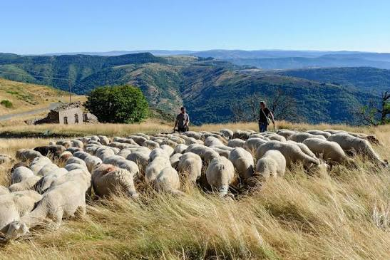
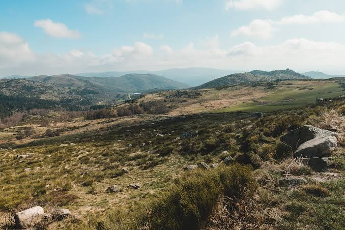

Parc national
des Cévennes


⟹ Réserve de biosphère UNESCO ⟸
Créé par décret le 2 septembre 1970, le Parc national des Cévennes est le seul parc national français situé en moyenne montagne, et l'un des rares dont le cœur reste habité et cultivé par des résidents permanents. Son cœur protégé s'étend sur près de 937 km², entre le Mont Lozère, l'Aigoual, les Cévennes et les Causses, au sein d'une aire d'adhésion de 122 communes.

Ce territoire porte l'empreinte de plusieurs millénaires d'agropastoralisme, qui a façonné ses grands espaces ouverts, ses lavognes, ses jasses et ses murets de pierre sèche. La beauté de ces sites humanisés et l'équilibre recherché entre activité humaine et préservation de la nature valent au Parc d'être désigné réserve de biosphère par l'UNESCO dès 1985, une reconnaissance renouvelée en 2019 pour dix nouvelles années.
En 2011, ce sont les paysages culturels des Causses et des Cévennes, façonnés par l'agropastoralisme méditerranéen, qui sont à leur tour inscrits sur la liste du patrimoine mondial de l'UNESCO. Le Parc devient ainsi l'un des rares territoires français à cumuler plusieurs grandes reconnaissances internationales.

Le territoire conserve aussi la mémoire d'une histoire humaine mouvementée, des dolmens et menhirs néolithiques aux hauts lieux de la résistance camisarde, en passant par les châteaux médiévaux et les églises romanes disséminés dans les vallées.
Un modèle de réserve de biosphère : désigné par l'UNESCO en 1985 puis reconfirmé en 2019, le Parc national des Cévennes concilie conservation de la biodiversité, développement économique local et maintien des traditions culturelles, selon les principes du programme « L'Homme et la biosphère ».
Une biodiversité remarquable : le territoire abrite environ 2 400 espèces animales et 2 300 espèces végétales, favorisées par la diversité des milieux, entre moyenne montagne, causses calcaires et vallées méditerranéennes.
Le pays des sources : parcouru par plus de 7 100 km de cours d'eau alimentés par quelque 400 sources, le massif a valu à la Lozère le surnom de « Pays des sources ».
La plus grande réserve de ciel étoilé d'Europe : labellisé Réserve internationale de ciel étoilé en 2018, le Parc offre un ciel nocturne d'une pureté rare, alors que deux Européens sur trois ne peuvent plus voir les étoiles à cause de la pollution lumineuse.
Maison du Parc Château de Florac, 6 bis place du Palais, 48400 Florac-Trois-Rivières.
Territoire 122 communes réparties entre la Lozère, le Gard et une partie de l'Ardèche, autour du Mont Lozère, de l'Aigoual, des Cévennes et des Causses.
Accès libre en cœur de parc, réglementé sur certains usages (camping, chiens, feux) ; se renseigner en Maison du Parc ou dans les points d'accueil du territoire.
Randonnées plusieurs itinéraires de grande itinérance traversent le Parc, dont le chemin de Stevenson, le GR®7 et le GR®736 des gorges et de la vallée du Tarn.